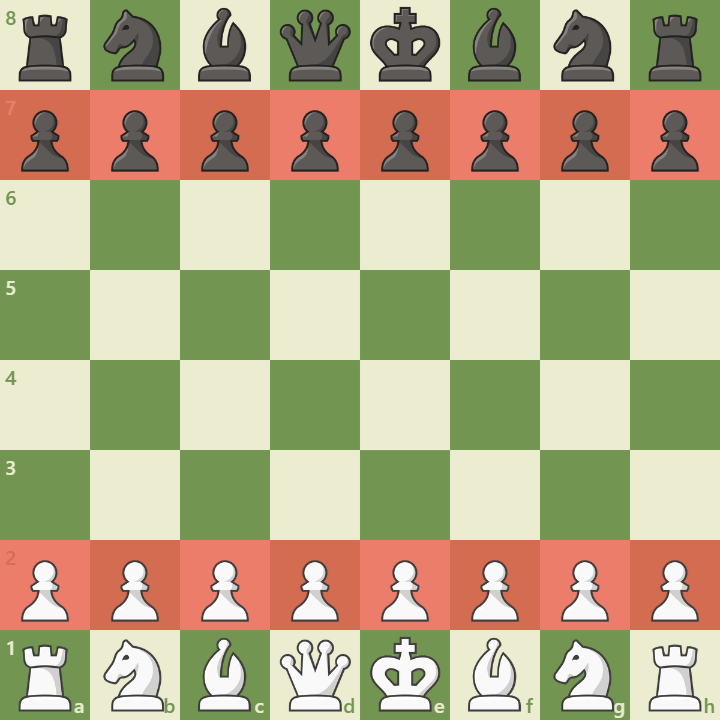
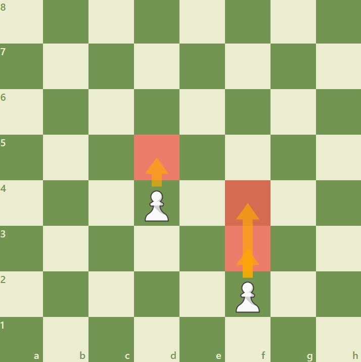
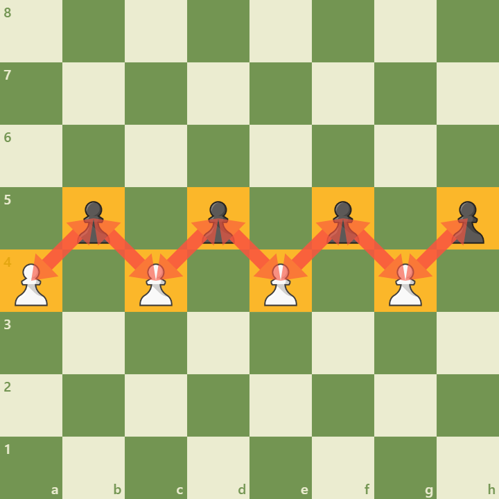
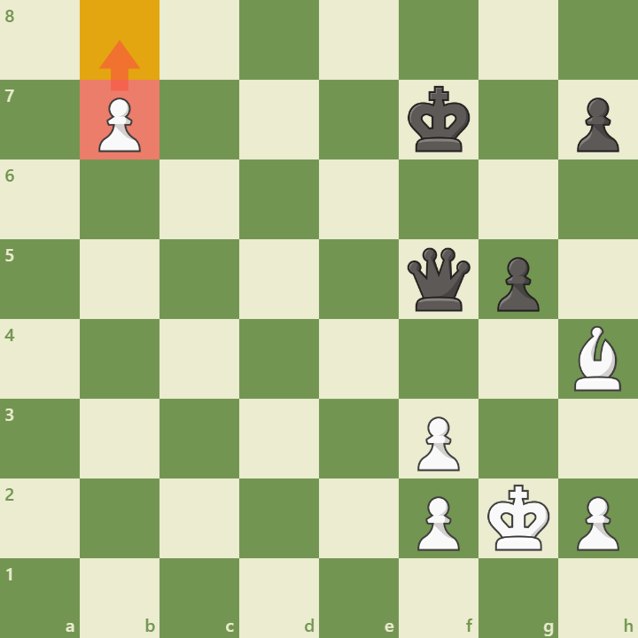
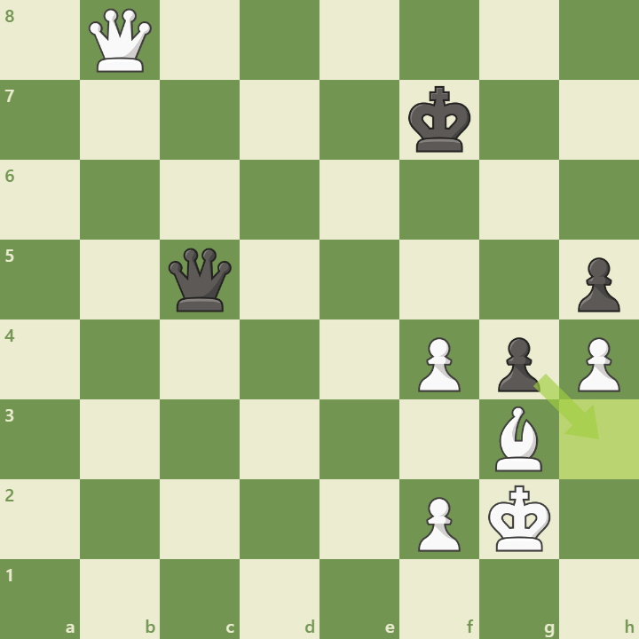

The pawn is the smallest and most numerous piece on the chessboard, with each player starting the game with eight.
Though it may seem modest, the pawn plays a vital role in shaping strategy and controlling space.

Key Characteristics:
 Movement: Pawns move forward one square at a time. On their first move, they have the option to advance two squares.
 Capturing: Pawns capture diagonally—one square forward to the left or right.
 Promotion: Reaching the opposite end allows promotion to any piece (except king), usually a queen.
 En Passant: A special rule to capture a pawn that moved two squares forward from its starting position.
Strategic Importance:
Control: Pawns help control key squares and restrict enemy movement.
Structure: Pawn formations define the character of the position.
Sacrifice & Initiative: Used in gambits to gain tempo or open lines.
Despite their limited mobility, pawns can become powerful assets when used wisely. Their journey from foot soldier to queen symbolizes growth, patience, and tactical foresight.